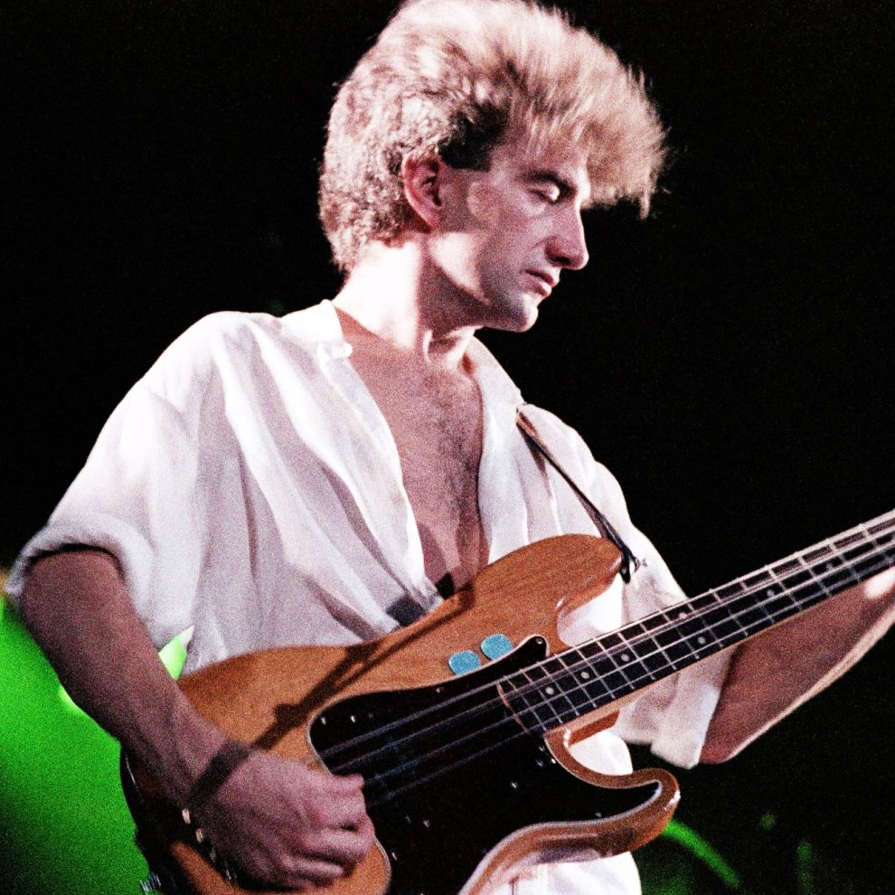

John Deacon
In a band of four out-sized personalities, John Deacon was the calm at the center of the storm. While Freddie, Brian, and Roger commanded the spotlight, Deacon was the "Quiet One," the meticulous electronics engineer who became the band’s rhythmic anchor and the author of their most iconic, global bass-driven hits.
The Final Piece of the Puzzle
When John Deacon joined Queen in 1971, he was the fourth bassist they had tried. He was the perfect fit not just because of his precise, melodic playing, but because of his temperament.
The Stabilizer: In a group of three highly vocal leaders, John’s quiet, observant nature provided the balance the band needed to stay together for two decades.
The Engineer: His background in electronics was vital; he famously built the "Deacy Amp" from spare parts found in a skip, a tiny amplifier that Brian May used to create his signature "cello" and "violin" guitar sounds.
The Master of the Groove
Deacon’s bass playing was never just about backing up the guitar; it was about the pocket. He had a deep love for soul and R&B, which brought a funkier, danceable edge to Queen’s rock sound.
"Another One Bites the Dust": Inspired by the band Chic, John wrote this bassline that became a global phenomenon, topping both the pop and R&B charts and expanding Queen’s audience into the world of disco and funk.
"Under Pressure": Though the songwriting was a collaboration with David Bowie, it is John’s simple, six-note bass riff that remains one of the most recognizable openings in the history of music.
The Hitmaker with a Heart
Though he wrote fewer songs than the others, John’s tracks were often the band's biggest commercial successes. He had a gift for writing relatable, emotional pop-rock.
"You’re My Best Friend": Written for his wife, Veronica, this track showcased his ability to write sweet, enduring melodies.
"I Want to Break Free": A song that became an anthem for liberation worldwide, proving that the "quiet" member of the band had a powerful, rebellious creative voice.
The Business Brain
Beyond the music, John was often the one who kept a close eye on the band’s finances and business contracts. His pragmatic, logical mind ensured that Queen became one of the most financially successful and well-managed bands in the industry. He was the "man on the ground" who understood the machinery behind the magic.
Retirement and the Legacy of Silence
Following the death of Freddie Mercury in 1991, John Deacon found it increasingly difficult to continue. He famously stated, "As far as we are concerned, this is it. There is no point carrying on. It is impossible to replace Freddie." * Stepping Away: After performing at the 1992 Tribute Concert and recording "No-One but You" in 1997, John chose to retire completely from the public eye.
Even in 2026, John remains retired, living a private life in London. While he no longer performs, he remains a silent partner in the Queen business, approving major projects and ensuring the legacy of the original four remains untarnished.